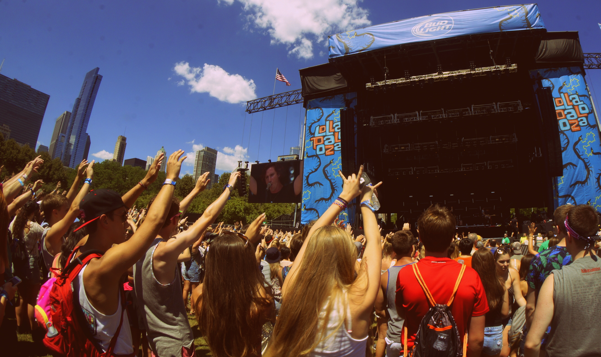

Lollapalooza es el festival de música más popular de los Estados Unidos, originalmente realizado en Chicago, iniciado por Perry Farrell en 1991 como una gira de despedida. Luego se extendió a América del Sur y Europa. Su nombre está asociado a las tribus indígenas que habitaban Estados Unidos antes de la llegada de los europeos. Las entradas del Lollapalooza se pueden adquirir a través de webs autorizadas y desde cualquier parte del mundo
Es un festival de Rock que se celebra en Chicago cada año, en él se presentan durante cuatro días, docenas de artistas de hip-hop, rock alternativo y techno. Es uno de los eventos más esperados del año ya que cuenta con bandas y lollapalooza artistas de primer nivel, además en él se presentaban comediantes y grupos de danza.
El término lollapalooza no puede ser traducido a una sola palabra y significa “ aquel que deslumbra, que debe ser visto, que es especial, que se destaca”.
Lollapalooza lineup, es una herramienta muy positiva para estar al tanto de todos los detalles del festival.
Este festival se inició en el año 1991 por el cantante Perry Farrell, en principio se trataba de una gira por el país como despedida de su banda. Esta gira por 20 ciudades de EEUU y Canadá incluyeron la banda Rollins, Uñas de nueve pulgadas y Ice-T. Tal fue el éxito que Perry Farrell planeó una nueva en 1992 visitando nuevas ciudades de América del Norte.
Se estableció el formato lollapalooza hasta el año 1997 cuando comenzó a ser poco rentable para sus patrocinadores y se suspendió. En el año 2003 y 2004 se intentó revivir el festival pero no tuvo éxito. En el año 2005 Ferrel encontró nuevos patrocinantes y se realizó de nuevo el festival en la Ciudad de Chicago, con una duración de dos días, para el 2006 se agregó un día más de música y diversión.
En el año 2011 se extendió a ciudades de Sudamérica, su primera presentación fue en Santiago de Chile y de allí lollapalooza Argentina en septiembre del 2013.
Continuaron sus éxitos y para el año 2016 tuvo una duración de 4 días.
Como plato fuerte de una programación en la que también estuvieron Soundgarden, Nine Inch Nails y Pixies, la banda de Los Ángeles hizo un muy buen show, apenas unos meses después de haber animado con Bruno Mars el espectáculo de medio tiempo en el Super Bowl XLVIII, en Nueva Jersey
Ya concentrado en su carrera solista, luego de hacerse famoso en todo el mundo con The White Stripes, el notable músico de Detroit llegó un par de meses antes de editar un gran disco, Lazaretto, sedujo con su look tan apropiado para una película de Tim Burton y se dio el lujo de que Robert Plant, otro golazo de esa edición, se sume en una gran versión de “The Lemon Song”, de Led Zeppelin.
Un show caliente y una clase de hip hop de primer nivel de un artista que ya había pasado por su era dorada hacía mucho -la trilogía The Slim Shady LP, The Marshall Mathers LP y The Eminem Show, entre 1999 y 2002- y que unos meses después de su visita a Buenos Aires lanzaría uno de los dardos más venenosos que se recuerden contra Donald Trump: el single “Campaign Speech”. El set tuvo todo lo que debía tener: “Stan”, “Sing For The Moment”, “The Way I Am”, “The Real Slim Shady”, “Without Me”, “Not Afraid”...
Cien mil personas fueron testigos directos del show elegante y poderoso de una banda que ya acumulaba quince años de trayectoria y había marcado el sonido de una época. Fue el show récord de audiencia para la banda neoyorquina, que se encargó de contarlo en sus redes al día siguiente. Acababan de romper con una larga relación con el sello RCA y traían en el bolsillo los temas de Future Present Past, un EP en el que insinuaban un cambio de dirección en su música. Pero la fiesta total se desató cuando sonó “Last Nite”, hit inoxidable de su segundo álbum, Is This It.
La banda de Las Vegas demostró que su alto status para espectáculos masivos era bien merecido, al margen de que el show tuvo un insólito bache cuando Brandon Flowers decidió darle el gusto a un fan argentino que había llevado un cartel en el que pedía tocar la batería y el chiste no salió del todo bien. Una andanada de hits sepultó ese paso de comedia involuntario y la gente se fue feliz, en la misma edición donde Lana Del Rey arriesgó con un espectáculo íntimo que exigía otro entorno y Liam Gallagher tuvo que sobreponerse con tesón a una notoria disfonía.
En la misma edición en la que brilló Arctic Monkeys, el rapero de Compton, Los Ángeles, voló muy pero muy alto. Con su flow punzante y versátil, apoyado por una banda excepcional, Lamar reprocesó con inventiva la rica tradición de la música negra relacionada con la psicodelia (Parliament Funkadelic, Sly & the Family Stone) en el marco de una puesta en escena deslumbrante.